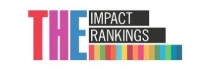

Universidad Católica
Andres Bello
Universidad Católica
Andres Bello
Organizado por la UCV, la UCAB, la UNIMET y la Embajada de Francia, el evento se realizará del 18 al 20 de marzo y contempla conferencias y coloquios de especialistas nacionales e internacionales sobre temas como justicia ambiental, restauración ecológica, educación ambiental y ecología política. Los interesados en participar como ponentes tienen hasta el 8 de enero de 2026 para postularse.



Las preincripciones para pregrado están abiertas desde el 17/11/2025 y cerrarán el 23/01/2026. La próxima Prueba de Conocimientos para el ingreso a la UCAB será el sábado 31 de enero de 2026. ¡Consulta la información e inscríbete!

¿Buscas perfeccionar habilidades o actualizar conocimientos clave? La UCAB abre el proceso de postulación a sus Cursos de Ampliación de Postgrados Trimestrales. Desde el 01 hasta el 18 de diciembre de 2025, profesionales como tú podrán inscribirse en materias específicas para elevar su nivel. ¡Postúlate!
Tenemos diversos programas de estudios actualizados, que te permitirán vivir una experiencia académica y práctica única. Desarrollarás habilidades y competencias para estar al día con las nuevas tendencias del mercado laboral.

La UCAB te ofrece una oferta académica de pregrado reconocida por su excelencia, con carreras que abarcan las áreas humanísticas, económicas, sociales, jurídicas e ingeniería.
QUIERO SER UCABISTA
Si buscas potenciar tu currículum profesional con nuevos conocimientos en un área particular, te invitamos a consultar nuestra oferta académica de estudios de tercer nivel.
QUIERO SABER MÁS

La UCAB tiene diversos programas de ayuda económica para sus estudiantes.
Apoyo Económico
Realiza los procesos académico-administrativos a través de Secretaría en Línea.
Secretaría en Línea
¿Aún no conoces el Programa Internacional de Intercambio Académico? Entérate de todos los detalles.

Mantente al tanto de todo lo que está pasando en la comunidad universitaria venezolana. Escucha el último programa radial aquí.

Conoce los programas académicos de formación ciudadana y actualización profesional, para la capacitación de servidores públicos.

Aquí encontrarás los datos de las Escuelas, Unidades de Apoyo y dependencias administrativas de la UCAB.

Conecta con las distintas dependencias de la UCAB.
COMUNÍCATE AQUÍ
¿Necesitas soporte técnico en las plataformas de la UCAB? Encuentra aquí la ayuda que buscas.
COMUNÍCATE AQUÍ
Te brindamos apoyo y guía para que te adaptes a la vida universitaria.
COMUNÍCATE AQUÍ
Queremos saber su opinión. Envíennos sus ideas, reclamos y/o propuestas.
COMUNÍCATE AQUÍ